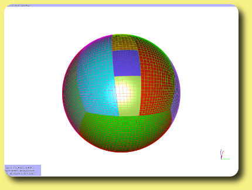
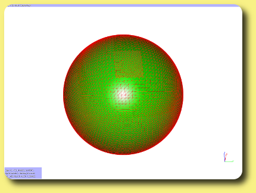
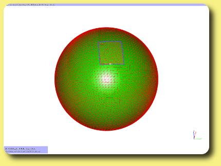
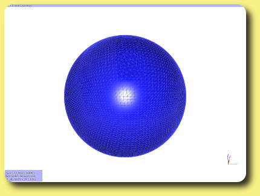

This tutorial demonstrates how to obtain a closed surface from
an open surface. Using a closed surface is usefull for
a variety of algorithms.
You should already have read how to select zones and how to open applets. [Dowload sample file].  
Closing/fixing a hole in a sphere by C. Benoit.
As a start, we consider an open sphere (Fig. 1) made of structured patches.
We want to obtained a close,
watertight surface from this sphere.
Step 1: get a single triangular zone
First, we will convert structured blocks to a single triangle zone.
You can of course bypass this step if your surface is already
triangular.
First open Block::tkBlock and
Block::tkSplit. Then, select all
blocks and convert them
to triangles using Block::tkBlock::convert2Tetra.
Once done,
join all zones in a single zone using
Block::tkSplit::join (Fig. 2).
Step 2: get the hole contours
Get the exterior edges of this surface using
Block::tkBlock::ExteriorFaces (Fig. 3).
Step 3: fill the hole contours
Open Surf::tkFixer2.
Select the exterior edges, and
create the filling surface with
Surf::tkFixer2::Fix gap in contour.
You can bump more or less the filling surface using the slider.
Finally, delete the exterior edges zone and join all zone in one (Fig. 4).